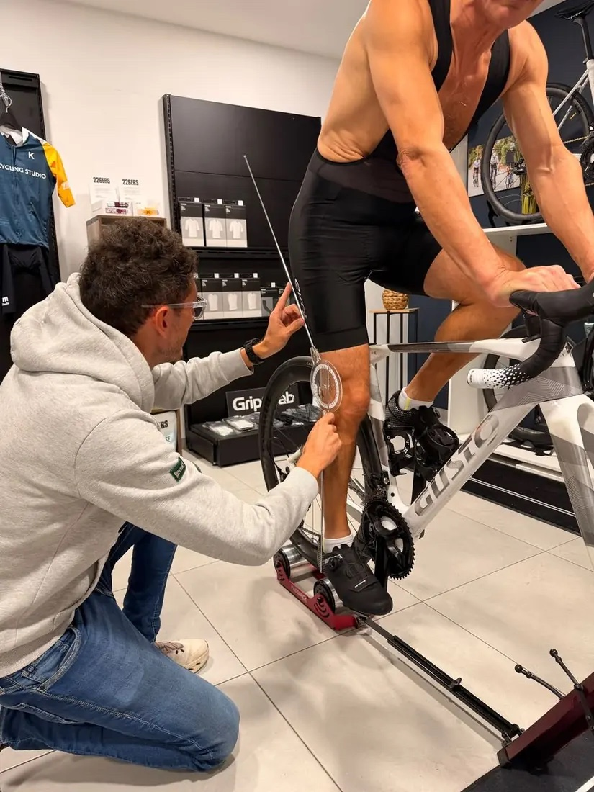

Le studio
Le studio
Le studio reçoit uniquement sur rendez-vous. Vous disposez du lieu, du temps et de notre attention pour imaginer le vélo qui vous ressemble.
Cadre, groupe, roues, finitions, position : chaque choix est discuté et assemblé à la carte. Rien n'est imposé, rien n'est laissé au hasard.
Une expérience privilégiée, du premier échange à la première sortie.
Votre parcours au studio
01
Nous parlons de vos sorties, de vos envies et de votre idée du vélo parfait.
02
Parmi les marques du studio, vous choisissez le cadre et l'esprit de votre futur vélo, avec nos conseils.
03
Vous composez votre vélo pièce par pièce, avec les marques du studio.
04
Votre vélo est assemblé et réglé à l'atelier, puis remis lors d'un dernier rendez-vous.

Sur mesure
Un vélo d'exception ne tient ses promesses que s'il est parfaitement ajusté à celui qui le monte. L'étude posturale est l'étape qui permet de définir la position qui vous convient, avant même de choisir le cadre.
Ce que nous analysons
Ce que vous y gagnez
Au showroom
Au showroom, vous ne repartez pas seulement avec un vélo : nutrition, accessoires, textile technique et textile personnalisable vous attendent aussi.
Nutrition
Gels énergétiques, barres et boissons pour vos sorties et votre préparation. Les produits les plus demandés sont disponibles au showroom.
Voir la gamme ↗Accessoires et textile technique
La marque danoise de textile technique et d'accessoires pour le cyclisme, au tarif préférentiel « Studio ».
Voir les produits ↗Textile personnalisable
La marque italienne spécialiste du « custom », pour les groupes, clubs et associations. C'est elle qui habille le Studio.
Découvrir OUTWET ↗Financement
Le Studio s'est associé à Cofidis pour vous proposer une solution de financement en plusieurs mensualités.
Sous réserve d'acceptation de votre dossier par Cofidis. Un crédit vous engage et doit être remboursé. Vérifiez vos capacités de remboursement avant de vous engager.